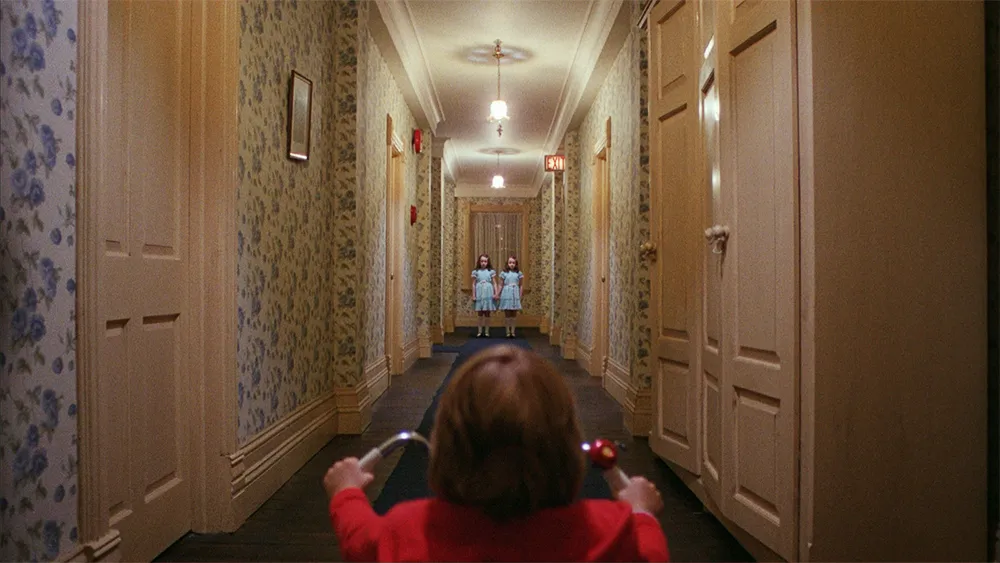
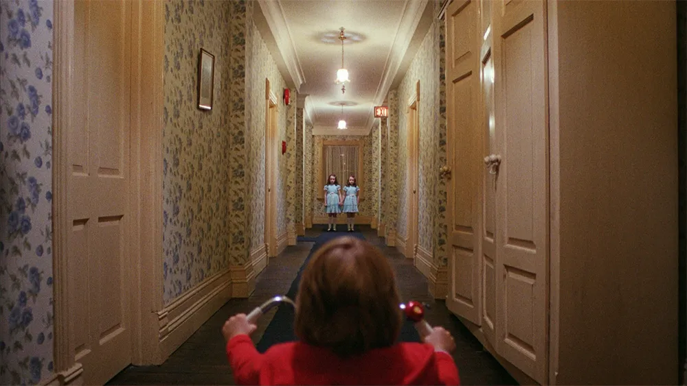
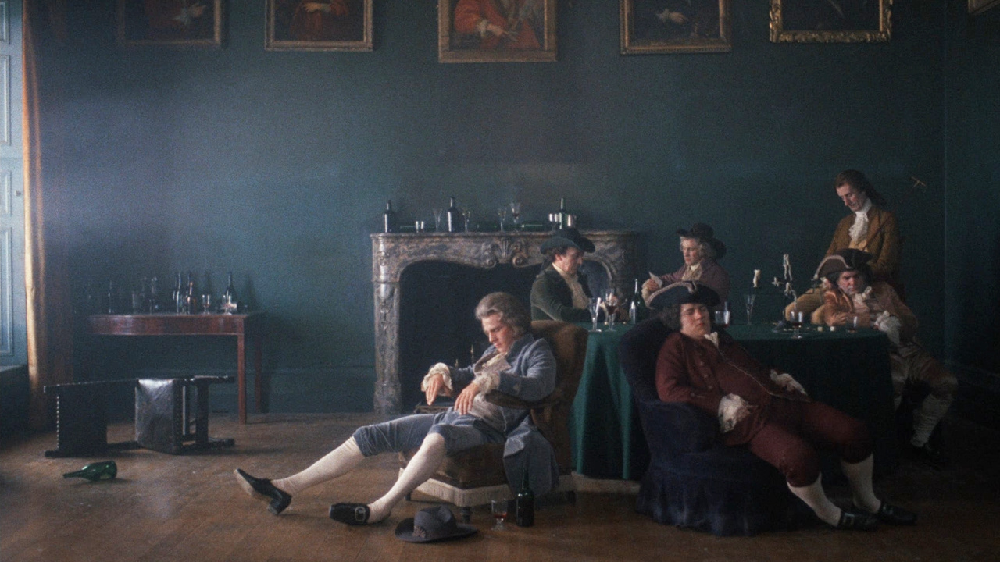
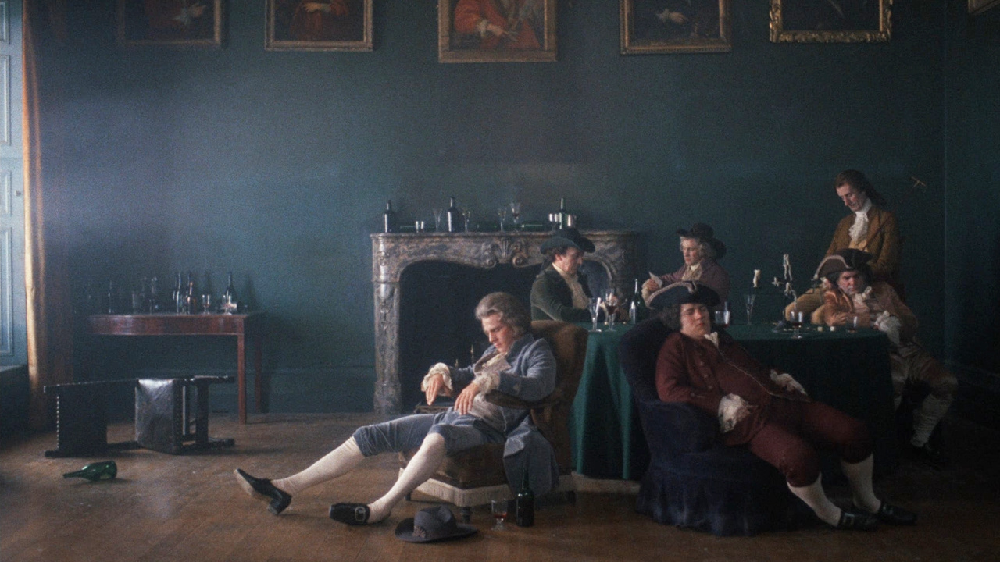

Kubricism
Acceuil
TP2-Automne 2024
Titre: Kubricism
Gabriel Bérubé-Beaulieu
Technique d'intégration Multimédia
Collège Maisonneuve
Voici un tableau de ses films les plus populaires:
| Films | Genre | Années | Box-Office |
|---|---|---|---|
| Eyes Wide Shut | Thriller | 1999 | 162.1M |
| 2001: A Space Odyssey | Scifi | 1968 | 146M |
| FullMetal Jacket | Guerre | 1987 | 120M |
| A Orange Clockwork | Triller | 1971 | 114M |
| The Shining | Thriller | 1980 | 47.3M |
| Barry Lyndon | Historique | 1975 | 31.5M |
Inscription
Si vous désirez vous inscrire au groupe Kubricism, voici le formulaire à remplir, dans ce groupe, nous parlerons de l’incroyable réalisateur de film Stanley Kubrick, qui, durant des décennies à marquer et révolutionner l'art du Cinéma, étant considéré comme l'un des meilleurs réalisateurs au monde et ayant créer plusieurs films cultes.
Si vous avez cochez autre veuillez écrire votre genre:
Adresse courriel:
veuillez insérez votre adresse courriel
Barry Lyndon
Ceci est la bande-annonce d'un de mes films préféré de Stanley Kubric, Barry Lyndon
2001: A Space Odyssey
Ceci est la bande annonce de mon film préféré de tout les temps, 2001: A Space Odyssey
Kubrick et ses oeuvres
Carrière
Stanley Kubrick, étant aujourd'hui reconnu comme l'un des meilleures réalisateur, n'a pas toujours eu ce titre, ces films étant régulièrement tourné à la controverse, à cause des ses sujets crues et hors du communs ou sujet considéré Taboo pour l'époque. A Clockwork Orange étant un bon exemple, c'est un film qui veut dénonçer le contrôle du gouvernement et qu'ils ne tiennent pas vraiment à notre liberté d'expression, ils veulent seulement qu'on agisse bien et que peut importe le reste. Apportant un débat morale à quel point est-ce correct de brimer la liberté de quelqu'un pour le bien de la société.
 

Il y a aussi, Lolita, qui parle d'un homme qui tombe en amour d'une petite fille de 12 ans, les gens n'étaient pas très réceptifs à propos d'un film sur la pédophilie.
 

Pour terminer, il ne faut pas oublier The Shining qui, aujourd'hui, est considéré comme un film de suspense et d’horreur culte ainsi qu'une référence cinématographique, mais quand le film est sorti, les gens ont détesté et le film à même gagner un prix radis pour le pire film de l'année
Raisons d'apprécier Kubrick
Il y a plusieurs raisons pour lesquelles j'apprécie Kubrick et qu'il est mon réalisateur préféré. Je suis un grand admirateur de cinéma depuis un bout de temps, mais jamais aucun film ne m'a fait ressentir ce que les films de Stanley Kubrick m'ont fait ressentir. Que ce soit par son incroyable cinématographie qui est distinguée par beaucoup de géométrie. Ainsi que son attention particulière aux détails de ses films, il était un humain très perfectionniste et cela paraît beaucoup dans ses films. Finalement, il était extrêmement innovateur pour l'époque et à fait des films que, même aujourd'hui les gens ne sont pas capables de reproduire la beauté de ses films. Il a tourné un film dans l'espace qui est très semblable à l'espace qu'on connaît, avant même qu'on puisse déposer un pied sur la lune. Barry Lyndon a été filmé avec des lentilles de la Nasa et est fait en sorte que chaque frame du film ressemble à une peinture, ce qui est incroyable considérant l'époque qu'il a réalisé ces fameux films.
Galerie Photos